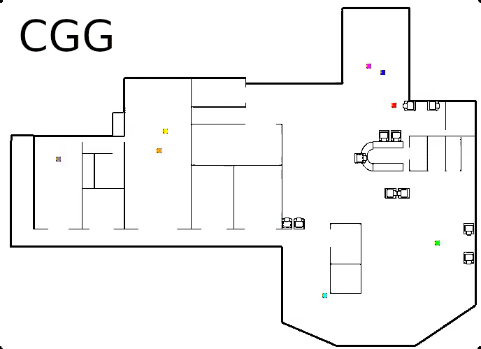

Collective Anomaly Perception During Multi-Robot Patrol:
Constrained Interactions Can Promote Accurate Consensus
Zachary R. Madin - Jonathan Lawry - Edmund R. Hunt
University of Bristol
9th April 2024 - 2024 ACM/SIGAPP
Motivation
Large search area
Multiple Agents
Listening device
Consensus of detection
Compare existing algorithms at collective perception
[3]
Background
Formulation of problem
Abstract map into a graph
Patrol algorithms minimize idleness
Patrolling Sim
Collective belief system
Patrol Map
Map to Graph
Algorithms
Agent Belief System
- World ternary belief [2]
- Simple measurement model
- Communication via pairwise comparison
- Convergence to steady state
Agent Communication
- World belief
- Communication Range
- Communication Timeout
- Resultant Social Network
Simulator [1]
Experimental Set Up
- 'Patrolling sim' simulator
- Ternary belief state
- Algorithms to test
- 8 Agents
- Cumberland map
- F1-score metric
Results
- Algebraic Connectivity
- Footprint patterns
- F1-score
- Average False and True Positives
Social Network
Algebraic connectivity
Footprint patterns

Footprint patterns
F-score
F-score
Average False and True Positive

Average False and True Positive

Discussion
- Moderate connectivity algorithms perform best
- High connectivity algorithms perform worse
- Low connectivity algorithms perform worst
- Exception is CGG algorithm
- Guaranteed to personally check nodes
Dirty Laundry
- F1-score is not perfect
- Belief system is not perfect
- Do results hold for number of agents?
- Judging algorithms at a new task
- Communication range and timeout period
Current & Future Work
- Investigating variation of communication range and timeout period
- Bayesian belief system & confidence intervals
- Real experiments with RF anomaly
References
- David Bina Siassipour Portugal. 2013. Effective Cooperation and Scalability in Multi-Robot Teams for Automatic Patrolling of Infrastructures. Ph. D. Dissertation. Universidade de Coimbra, Portugal.
- Michael Crosscombe and Jonathan Lawry. 2017. Exploiting Vagueness for Multi- agent Consensus. In Multi-agent and Complex Systems, Quan Bai, Fenghui Ren, Katsuhide Fujita, Minjie Zhang, and Takayuki Ito (Eds.). Springer Singapore, Singapore, 67-78.
- Adafruit Feather RP2040 with RFM95 LoRa Radio - 915MHz - RadioFruit and STEMMA QT - Attribution-NonCommercial-ShareAlike (CC BY-NC-SA 2.0)
Questions?
Thankyou!
Collective
Anomaly Perception During Multi-Robot Patrol: Constrained Interactions
Can Promote Accurate Consensus Zachary R. Madin - Jonathan Lawry -
Edmund R. Hunt University of Bristol 9th April 2024 - 2024 ACM/SIGAPP